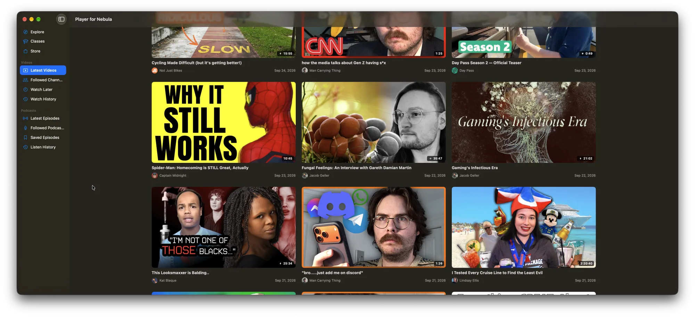

Nebula, as a real Mac app.
Watch videos, follow creators, and listen to podcasts from your Nebula subscription in a native macOS app, with a native video player instead of a browser tab.
Download for Mac
Free and open source. Requires macOS 26 or later.

Everything you use Nebula for
- Latest videosNew uploads from the channels you follow, newest first.
- ExploreBrowse videos, channels, and podcasts by category, including Nebula Originals.
- ChannelsFollow and unfollow creators, and filter their videos down to Nebula exclusives.
- Watch later and historySave videos for later and find what you watched recently.
- Pick up where you left offYour progress saves as you watch and syncs with your Nebula account.
- PodcastsLatest episodes, followed podcasts, saved episodes, and listen history.
Install
- Download
Get PlayerForNebula.dmg and open it.
- Drag to Applications
Drag Player for Nebula onto the Applications folder in the window that opens.
- Sign in
Open the app and sign in with your Nebula account.
How it works
You sign in on the regular Nebula login page, shown inside the app. The app then talks to Nebula the same way nebula.tv does in your browser, and plays videos from the same streams.
It doesn't download videos or get around any protections. You need your own Nebula subscription.
The app relies on Nebula's internal APIs, which can change without notice. If something breaks, file an issue on GitHub.